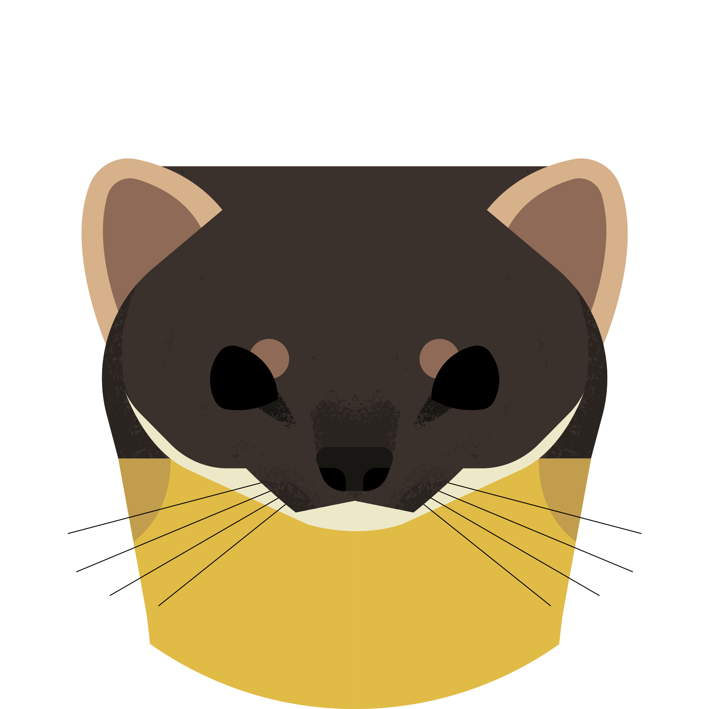
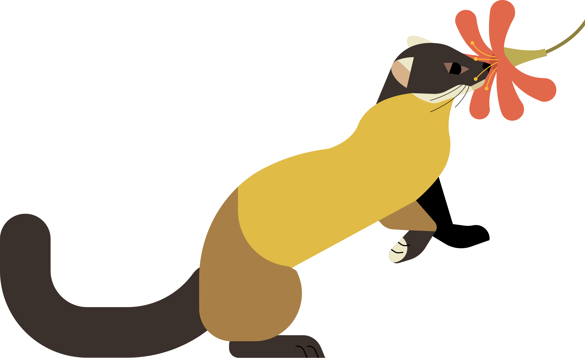

The Yellow-Throated Marten is the largest marten species, and is known for its powerful, physical build. Instead of having the signature yellow bib other marten species has, the Yellow-Throated Marten is predominately yellow, as if its body is acting as the bib. It also has black legs and a black tail, with some even having white spots on their paws.
The Yellow-Throated Marten has a distinctly wide head, with its shorter, rounder ears making its face appear more dense. Despite the rest of its body being mostly yellow, the head of the Yellow-Throated Marten is predominately black, with a white chin that marks out its muzzle. The overall shape and layout of the face makes it look closer in appearance to its extened cousin, the badger.
Found along South and Southeast Asia, Yellow-Throated Martens can appear in a diverse array of habitats. Also nicknamed as the "Himalayan Marten" because of its range, the Yellow-Throated Marten is very flexible and tough, widthstanding the extreme temperatures of higher elevations and the coniferous forests.
The Yellow Throated Marten is known to be very fierce, hunting larger prey, such as deer, pheasants, monkeys, and even the elusive red pandas if given the chance. However, due to the opportunistic nature of martens, the Yellow-Throated Marten is also known for eating plants and plant-based foods, such as nectar.
The Yellow-Throated Marten is well known for its bold, yet reckless, behavior. Compared to other marten species, the Yellow-Throated Marten is unusually curious towards humans. This behavior may be explained by it being one of the top predators of the region, only being preyed on by the Siberian Tiger and Asian bears. Even the terrain isn't enough to slow them down. Yellow-Throated Martens can often be found swimming across lakes, an activity mostly found by martens that live by the coast.